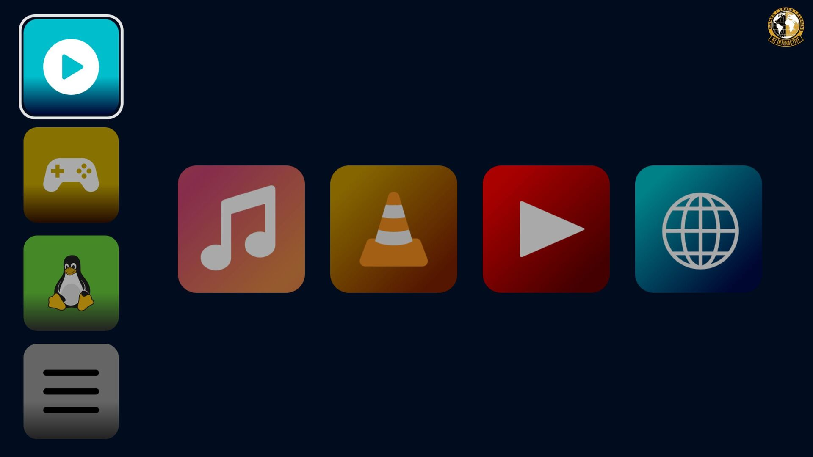

A game console style launcher for Linux
Pick a page on the left, pick an app in the middle. Made with Godot, controller-friendly, and set up with one config file.


Very light on resources
- CPU usage at idle
- 5%
- RAM
- ~125 MB
- Max power draw
- 2.2 W
Measured on an Intel Core i7-7700HQ laptop, version VERSION.
How it works
- Four pages
- Switch between four pages from the left column. Group your apps however you like under: media, games, tools, system.
- Apps in the center
- Each page shows its apps as large tiles that are easy to hit with a controller, remote or keyboard.
- One config file
- Everything is set up in
config.cfg. Add as many apps as you want; 12 or fewer works best. - Smart Idle
- Reduces background activity when not in focus. Going as low as 2% CPU usage at idle clocks and 1.8 W used when not in focus.
- Broad font, image, video, sound support
- Supports many file types built into the Godot engine with custom built exec not excluding any formats.
- Made with Godot
- Built in the Godot engine for Linux, so it feels like a game console and starts like a small app.
Screenshots


Try it on your Linux machine
Download v1.0.1, edit config.cfg to add your apps, and launch.